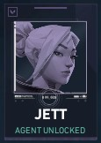

Selecione um Agente
- 

SAGE
Como uma verdadeira fortaleza chinesa. Sage traz segurança para si mesma e para a equipe aonde quer que vá. Capaz de reviver aliados e rechaçar investidas agressivas, ela oferece um centro de calmaria em meio ao caos da batalha.
SENTINELA
Sentinelas são especialistas em defesa que podem bloquear áreas e vigiar flancos, tanto nas rodadas de ataque, quanto nas de defesa.